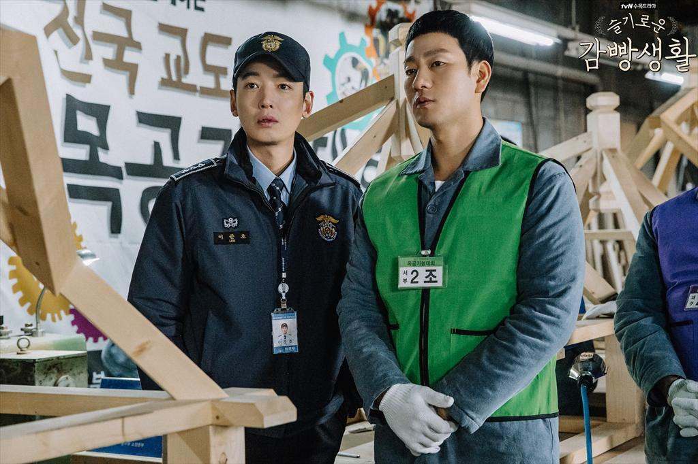
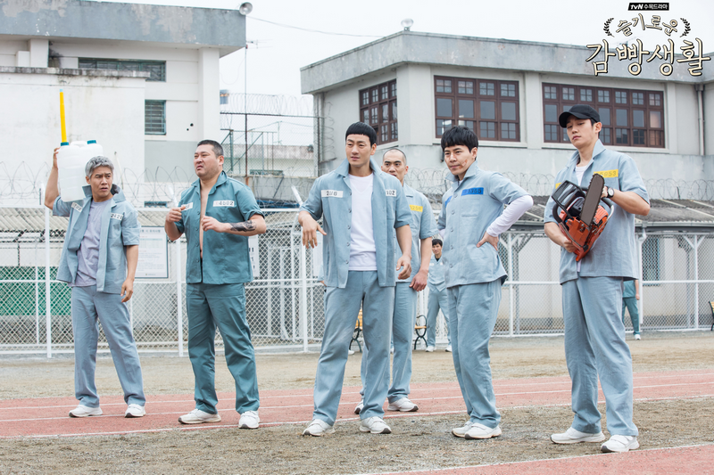

沒有高顏值的主角或是近來流行的奇幻內容，甚至把一般人不喜歡討論的現實人性放進來，為什麼當年能在韓國創下有線台最高收視，甚至開高走高，一路突破自身收視紀錄？
韓國難得有以監獄為背景發生的故事，表面上看起來像負面的題材，內容卻非常勵志、振奮人心，而且深入人性，雖然每個事件都圍繞著這群監獄裡的「壞人」，卻能在過程中看見本性的善良，然而編劇最厲害的是運用觀眾喜歡美化角色的心理，會突如其來顯現一些「事實」提醒觀眾，看起來是好人的人也不見得能相信、平凡的樣貌下也可能藏著意想不到的企圖，讓人看到一半忍不住瞠目結舌。
絕無冷場的劇情，神手編劇鋪陳超用心！
監獄題材既然有暗黑面，那勵志在哪呢？主角金濟赫是全國知名的棒球明星，因意外而入監服刑，在服刑期間與罪犯們發生各式各樣的故事，雖然劇情帶有黑色幽默，時而逗趣搞笑、時而溫馨感人，監獄生活好不無聊，但編劇並沒有讓主角很理所當然接受這一切，反而時常透露出自己其實是在隱忍這些本來與他毫無瓜葛的人事物，面對出現在生命裡的意外他只能無奈且盡可能樂觀地接受，金濟赫個性單純、正派且直率，更成為本劇的希望所在，就像是黑暗中一顆明亮的星，即使光芒微弱，仍隨時閃爍著，照耀身邊的其他人。
三大精彩看點一次告訴你：
▋「不用說，你懂」的義氣友情線：
主配角間的默契跟戲劇成敗絕對有關係，這次朴海秀飾演的主角金濟赫跟鄭敬淏飾演的李俊浩之間就是那種深厚到靠眼神就能互相理解的友情，尤其是主角濟赫個性木訥寡言，只有在好友俊浩面前能坦白說出自己的想法和感受，而他沒說出來的部分，俊浩也都很好地幫他守護面子，默默替他做到了。兩人笑鬧的默契跟朋友間互虧互坑的小心思超有趣，而且都是越看越有魅力的角色！兩人的互動與火花絕對是本劇最好看的亮點之一。

▋反差有趣的傲嬌愛情線：
一個寡言木訥的男友，配上一個活潑直接的女友，雖然看起來像是男主角在包容傲嬌女主角，但隨著劇情會發現其實女主角默默為男主角付出許多，她反而是在主角遇到煩惱或困境時能給予解憂鑰匙的重要角色。這部劇的愛情戲不算重也不算主要，但適時地穿插其中，很融洽且美好地調劑了監獄的人情冷暖，可以看到他們兩人從認識、分手與復合的過程，讓人陪著一起焦急、一起甜蜜。

▋現實又反轉不斷的監獄故事：
這部劇中每個人身上都帶著故事進到監獄，有人是課長、有人是富二代，也有人是真的幫派嘍囉，不是每個進監獄的都是壞人，而你認為的好人也不見得不會做壞事，這部劇透過不同的人物故事持續給予觀眾震撼與反思，一個平凡的老伯可能是殺人犯、擁有高學歷的富二代變成吸毒犯、長相兇惡的幫派份子居然是監獄裡的模範生…各種衝突與細節都描摹出人性、現實的寫照，編劇勇敢地玩弄觀眾的心理，牽動著每個人的期待和認知，造就了一部史無前例的精彩傑作。人物設定鮮明，多少角色就有多少故事
這部劇角色有夠多，但導演把每個角色的特性都塑造得非常強烈，很容易留下深刻印象，再加上雖然配角眾多，但仍時時緊連著主角個人故事的主線在走，因此觀看的時候也不會想中離或棄劇，反而會從每個角色的連結中體會各自用心。
這部追完之後會對整個韓國的監獄結構、體制等有比較清楚的觀念和了解，也有助於未來看更多警匪相關題材的劇，趕快去看看這部精采神劇吧！